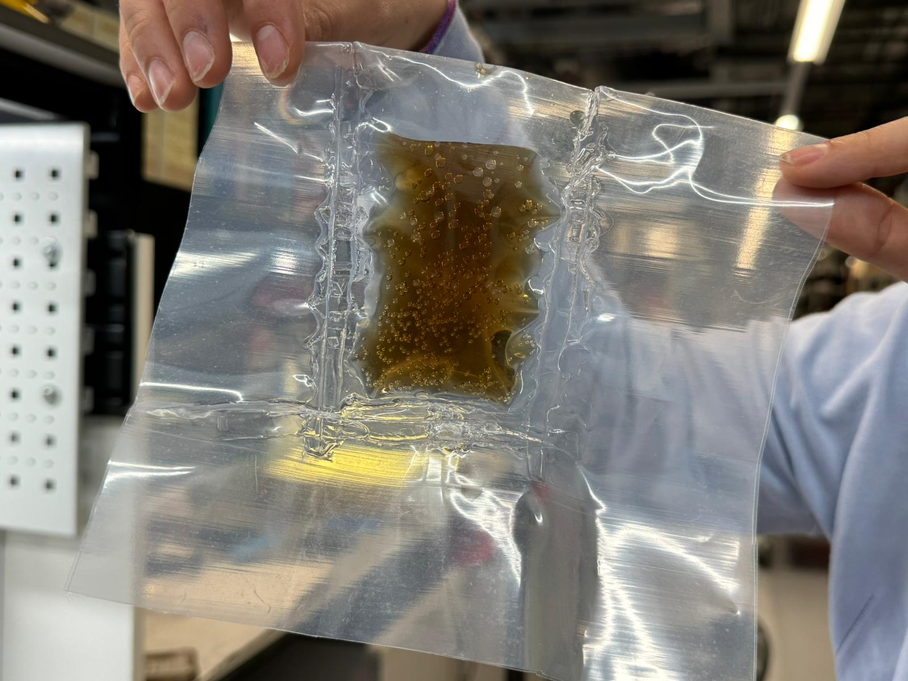
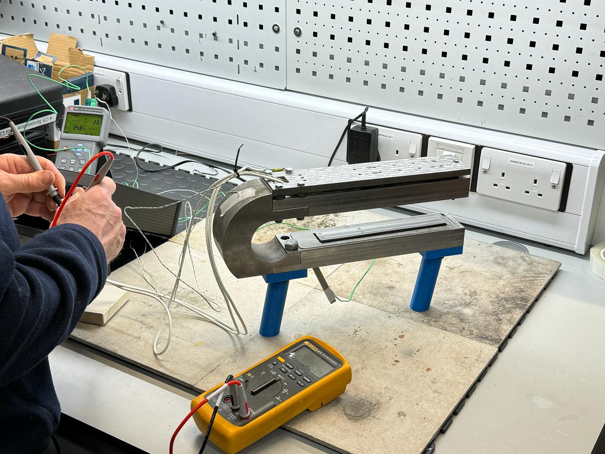
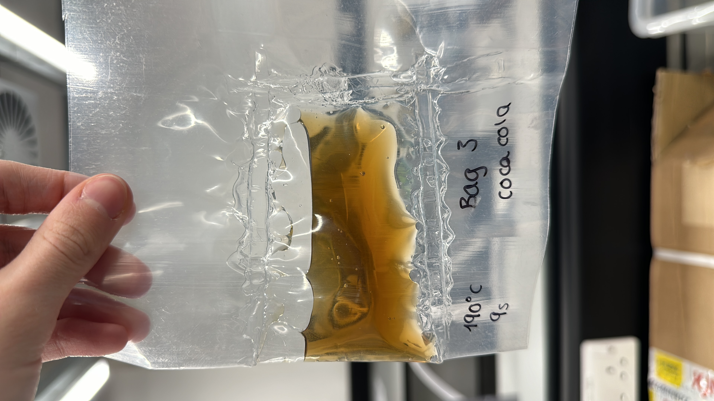
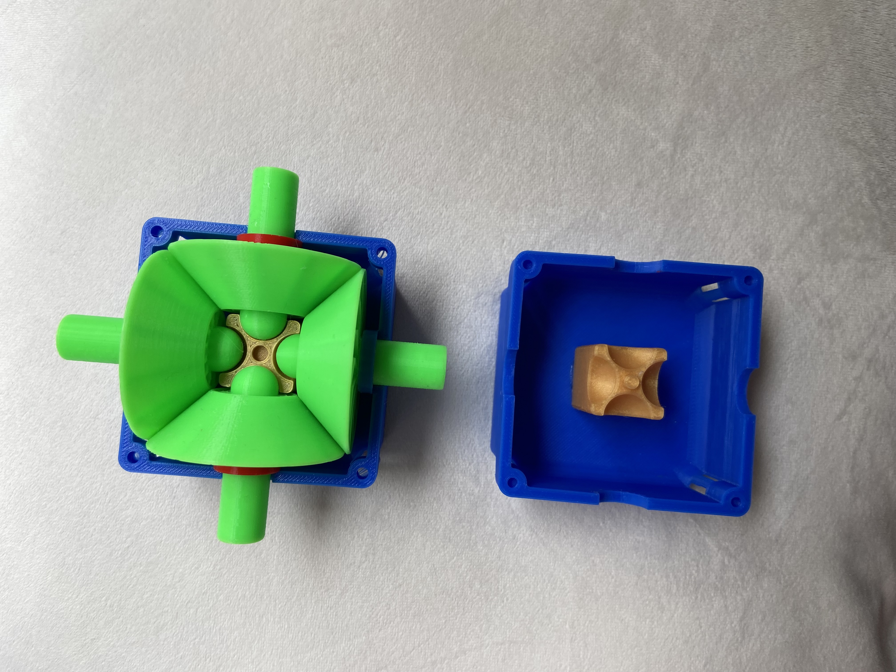

Work Experience
Design of an Automated PVC/PUR Bag Welder (09/2023 - Current)
Engaged in a group design to innovate welding technologies in the nuclear sector, replacing RF technology with portable and energy-efficient methods. Completed design specification for manufacturing proposition, determining a 70% throughput improvement for material sealing and storage.



Consultancy Intern (SEO London - 07/2023 - Current)
Extrapolated and analyzed vehicle ownership and usage data from 10,000 Bangkok citizens to recommend a government electric car subsidy increase to £15,000 to combat environmental impacts. Worked with leaders in consultancy firms and engaged in case study masterclasses.
Financial Services and Consulting Intern (Bright Network - 06/2023 - 07/2023)
Enhanced a bakery’s throughput by 50% by identifying production inefficiencies, increasing sales by 30%. Identified over 20% financial discrepancies during an audit.
Gearless Transmission System Design (09/2022 - 07/2023)
Incorporated SolidWorks to design transmission parts, reducing costs by 70%. Discussed designs with manufacturing professors and established criteria for design-for-manufacture (DFM) and design-for-assembly (DFA).


UKSDC London Winner and National Finalist (12/2018 - 03/2019)
Team leader in developing aircraft and temporary infrastructure design. Completed FEA analysis to estimate load capacity limits, ensuring safety in passenger unloading.
Education
Master of Engineering: Mechanical Engineering (09/2020 - Current)
University of Manchester
International Baccalaureate (09/2018 - 07/2020)
Dartford Grammar School, Total Points: 39/45
Volunteering
Foreign university application aid and engineering summer camp (Summers of 2021, 2022, 2023): Coordinated teaching of SolidWorks and AutoCAD in toy car design competition. Guided final-year students on UK university applications.
Interests
Mountain Biking, Formula 1, Manchester Hyperloop, Mechanical Engineering Society, Founder of Marsham Wanderers football club.